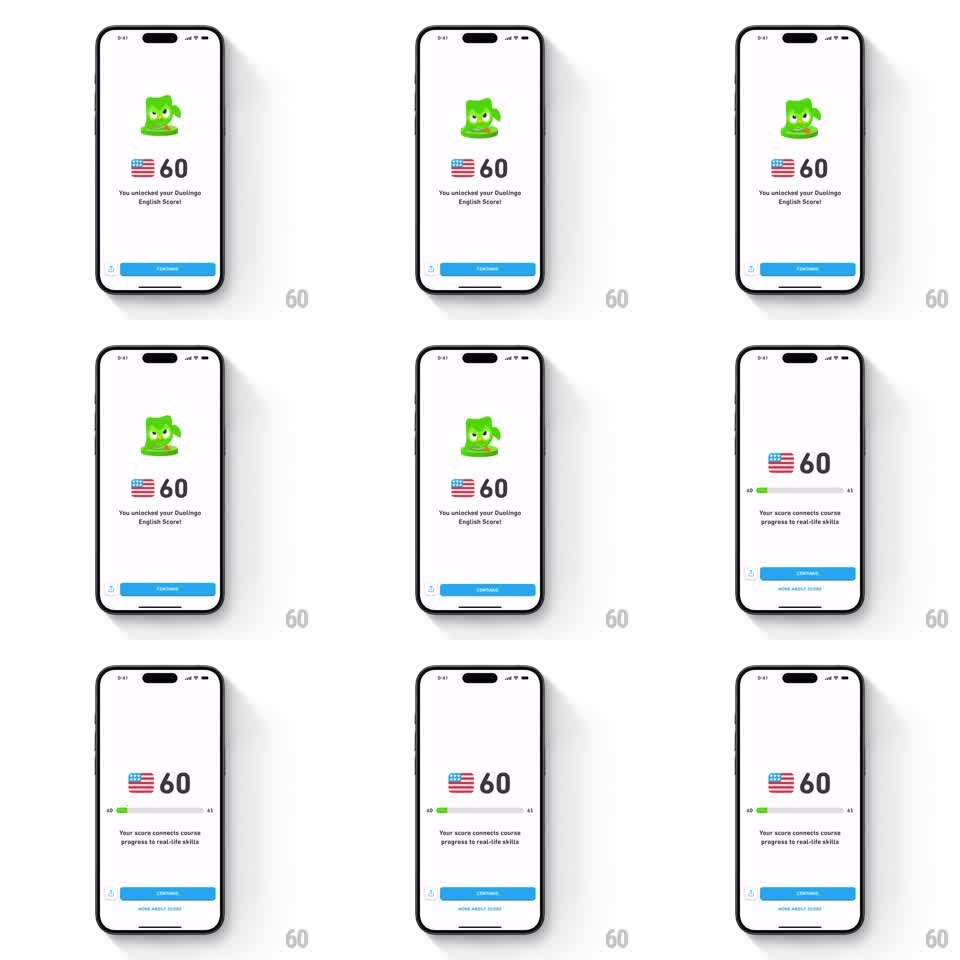

Media
Frame-by-frame

Rebuild this animation 1:1: Duolingo's English Score unlock - superhero Duo hovers in place above the score reveal, then shrinks away as the detailed score screen with its range bar takes over.

Rebuild this animation 1:1: Duolingo's English Score unlock - superhero Duo hovers in place above the score reveal, then shrinks away as the detailed score screen with its range bar takes over. ## Integration Integration: stack-agnostic spec - springs given as stiffness/damping, timed motions as duration + curve; map every value to your framework and animation library of choice. ## Scene A white result screen: Duo the owl in a superhero pose hovers at top center, cape and all, bobbing gently. Below him, the US flag badge and a big "60", with "You unlocked your Duolingo English Score!" and a blue CONTINUE button at the bottom. Continuing transitions to the detail screen: Duo shrinks out, and the score "60" sits above a horizontal range bar (marked 40 to 65) with a green segment showing where the score lands, plus the copy "Your score connects course progress to real-life skills", a CONTINUE button, and a "MORE ABOUT SCORE" link. ## Motion spec Pattern: looping hover into screen transition, ~2s loop plus 500ms transition. - Duo hovers: a gentle vertical bob (plus/minus 8px, 2s period, ease-in-out) with a tiny cape flutter - an idle loop that runs until the user continues. - On continue, Duo shrinks and rises off the top of the screen (350ms, ease-in) as the flag and score shift up into the detail layout (spring stiffness 320 damping 26). - The range bar draws in: the track fades, then the green fill extends from the left to the score's position (500ms, ease-out), the marker settling with a small bounce. - The explanation copy, button, and link fade up in sequence (150ms apart, 250ms each). ## Calibration - The hover loop is subtle - Duo never leaves his spot, he floats. - The green fill on the range bar lands exactly under the "60". ## Reduced motion Duo holds still; screens crossfade. ## Don't miss - The flag badge and score survive the transition - they move to the new layout rather than reappearing. - The range bar is a graduated scale, not a 0-to-100 progress bar.